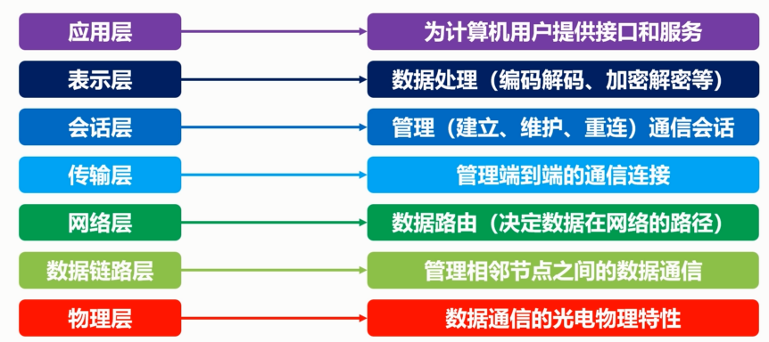

<h1 id="计算机网络的层次结构"><a href="#计算机网络的层次结构" class="headerlink" title="计算机网络的层次结构"></a>计算机网络的层次结构</h1><h2 id="层次设计的基本原则"><a href="#层次设计的基本原则" class="headerlink" title="层次设计的基本原则"></a>层次设计的基本原则</h2><p>目的: </p>
<ul>
<li>保证数据通路顺畅</li>
<li>识别目的计算机</li>
<li>目的计算机状态</li>
<li>数据是否错误</li>
</ul>
<blockquote>
<p>原则：</p>
</blockquote>
<ul>
<li><strong>各层之间是互相独立的</strong></li>
<li><strong>每一层要有足够的灵活性</strong></li>
<li><strong>各层之间可以完全解耦</strong></li>
</ul>
<h2 id="OSI七层模型"><a href="#OSI七层模型" class="headerlink" title="OSI七层模型"></a>OSI七层模型</h2><p></p>
<h2 id="TCP-IP-四层"><a href="#TCP-IP-四层" class="headerlink" title="TCP / IP 四层"></a>TCP / IP 四层</h2><p>四层</p>
<p></p>
<p>示例：</p>
<p></p>
<p>协议：</p>
<p></p>
<h2 id="现代互联网的网络拓扑"><a href="#现代互联网的网络拓扑" class="headerlink" title="现代互联网的网络拓扑"></a>现代互联网的网络拓扑</h2><ul>
<li><p>边缘部分</p>
</li>
<li><p>核心部分</p>
<p>  </p>
</li>
</ul>
<h3 id="现代网络拓扑呈现树状结构"><a href="#现代网络拓扑呈现树状结构" class="headerlink" title="现代网络拓扑呈现树状结构"></a><strong>现代网络拓扑呈现树状结构</strong></h3><p></p>
<h3 id="连接模式"><a href="#连接模式" class="headerlink" title="连接模式"></a>连接模式</h3><ul>
<li>客户-服务器模式</li>
</ul>
<p></p>
<ul>
<li>P2P 模式</li>
</ul>
